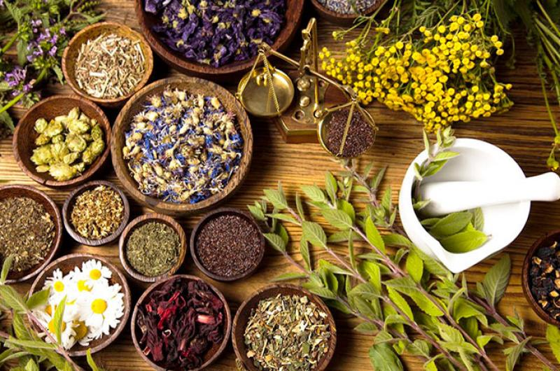

THE HEALING POWER OF HERBS (PHYTOTHERAPY)

Below is an informative BBC documentary on the healing powers of therapeutic herbs.
If you don’t have the time to watch; I’ve summarized it in this blog post.
Be sure to scroll to the end as I’ve included a video that gives you step-by-step instructions on how to make a powerful painkiller using a common backyard weed.
In Britain; herbal remedies are the fastest growing alternative medicine – with an annual turnover of 100 million pounds (128 million US).
Demand is so high, that there’s a herbalist in every suburb.
But what is most interesting is that these herbalists come from different countries and continents – all using different combinations of herbs that grow natively from their own homeland.
Traditional Chinese herbs are one of the most popular.
Practitioners claim to cure everything from Impotence to depression.
Many give testimony to herbs changing their lives.
One of these people is Michael Campbell; for years he suffered from chronic leg pain.
Michael was diagnosed with a dangerous circulation condition called ‘Intermittent Claudication’.
Michael reported: “It was so bad that I couldn’t walk 400 yards without having to stop from the searing pain”.
The usual treatment is surgery, but Michael has phobias about surgery.
So he visited a herbalist who prescribed him gingko.
To Michael’s astonishment – It cured him.
Michael shook his head saying: “I don’t know how it worked… I don’t know how aspirin works either… but what I do know is that gingko is beneficial to my condition”. Now I can walk four to five hours, no problem”.
Herbalists rely on thousands of year’s worth of knowledge… the oldest texts date back 5000 years.
Today, researchers are still recording how they were traditionally applied.
Many herbs are the base ingredient of common medicines today.
The bark of a willow tree contains a painkilling compound that scientists copied to produce Aspirin.
Poppies contain opium which is the chief ingredient for morphine.
But herbalists argue that herbs don’t have to be the base of a medicine – but used as a medicine in its own right.
A British herbalist; Simon, examines the presenter and interestingly uses traditional Chinese medicine methods and terminology to determine what herbs she needs.
Herbalists claim that this type of diagnosis is required to make sure each patient get their own unique blend of therapeutic herbs – rather than a ‘one size fits all’ approach like western medicine.
In South Africa; herbalism has a long tradition. In local villages; the price of western medicine is out of reach… and herbs are all they have.
Ann Hotchings is a medical researcher and a herbal practitioner. Seven years ago she started using the native herb ‘sutherlandia’ to treat locals infected with AIDS. The results were astonishing.
Ann has been treating a local villager with AIDS for six years now. She says that that sutherlandia gives her strength, restores her appetite, and relieves pain. “Without sutherlandia; I’d be dead”.
This isn’t an isolated case; Ann has treated 600 villagers with the same results. She claims that it strengthens the immune system by increasing white blood cells.
In Britain; herbal medicine hasn’t been given the clinical trials it needs to go mainstream. The reason for this is because it’s very difficult for pharmaceutical companies to patent a variety of plant. Without the prospect of huge profits; pharma companies won’t bother.
But in Germany; this is a different story. Therapeutic herbs are considered one-in-the-same with western medicine.
In Germany; all GP’s are trained in the basics of herbalism. And a large portion of doctors treats patients with herbs equally as much as modern medicine. In fact; the second most popular prescription (other than aspirin) is gingko.
Germany leads the global forefront in herbal medicine research. Interestingly; it was the Nazis who pushed for intense research to uncover the full potential of therapeutic herbs.
The “German Commission E Monographs” is the herbalists ‘bible’ – listing over 380 different herbs that treat numerous ailments.
Jenny Miles had been suffering from depression for years. “I remember as young as a teenager just wanting to overdose on pills so I could end it all” – she said.
“Depression takes away your heart and soul and you just don’t want to continue.”
Jenny tried anti-depressants but the trouble is that not only does it take away your ‘lows’ but also your ‘highs’ – turning you into a zombie.
As a last resort; she took a herb called ‘St John’s Wort’. And the benefits were almost immediate.
“I was able to control my depression like nothing before,” she said.
St John’s Wort contains a chemical called hypericin which relieves depression. In a recent trial; 50% of those who took St John’s Wort was cured of depression and never had a relapse again.
Although there is a lot of research yet to be done on therapeutic herbs; there are dozens that have been through rigorous testing and have been proven to work.
These are some of these ‘super herbs’.
- St John’s Wort – for mild to moderate depression
- Black Cohosh – that helps with the symptoms of menopause
- Devils Claw – helps relieve joint pain and acts as an anti-inflammatory
- Garlic – reduces high blood pressure and lowers cholesterol
- Saw Palmetto – helps relieve enlarged prostates and urinate better
- Hawthorne – helps people with heart conditions
- Horse Chestnut – helps to reduce varicose veins
- Gingko – among other benefits; Improves memory and cognitive functions
Unfortunately; rigorous clinical trials cost a lot of time and money to conduct. As mentioned earlier; pharma companies will only invest the capital if there are huge profits at stake. So most therapeutic herbs have been largely ignored as a viable option to treat illnesses.
Years ago; I would have been skeptical about the power of therapeutic herbs. But time-after-time I learn about downright lies the public has been fed about our health and wellbeing for the sake of profits.
So if you have a nagging ailment; don’t rely on past research to confirm if a herb will work for you. Rather, try it out for yourself and draw your own conclusions.
Are you sick of toxic products?
Discover for yourself 215+ natural home remedies that treat an abundance of health conditions, beauty regimes as well as weight loss elixirs – dramatically reducing your exposure to chemicals